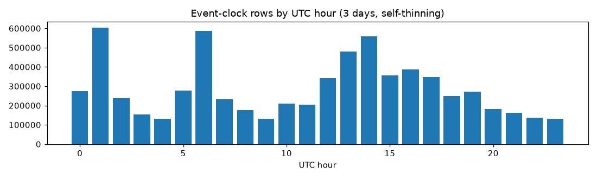
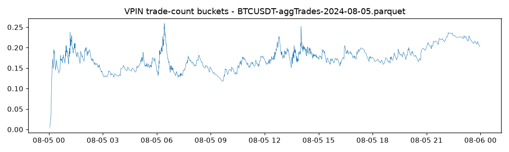

The Working Manual.
The four working sections of the site — every concept taught from the ground up, the data and machinery, the falsification record, and the knowledge base — are now one book. Nothing was cut; the parts were bound together.
- Part I · Every concept, taught
- Part II · Data & machinery
- Part III · The falsification record
- Part IV · The knowledge base
Part I · Every concept, taught.
This page teaches, from scratch, every idea the Salient programme uses. It is built in three parts, and they are meant to be read in order:
Part 1 — the market concepts behind the hypothesis: what markets measurably do (volatility clustering, heavy tails, self-excitation) and the state the hypothesis is about (compression, the salience gradient, the clock). Part 2 — the statistical machinery used to test any claim about them: hazard, labels, purged cross-validation, placebos, nulls, and how to read every number on this site. Part 3 — the microstructure concepts behind the next phase: the limit order book, order flow, VPIN, Hawkes, OFI, Kyle's lambda, event clocks — the vocabulary of the L2 experiment. Each lesson follows the same shape: the intuition (analogy) first, then the definition, then a worked example with real numbers from this programme, then what it cannot tell you — because in this lab, the boundary of a concept is as important as the concept.
Contents
- Volatility clustering (and why it mean-reverts)
- Heavy tails (and why thresholds live in sigma units)
- Autocorrelation with horizon structure (trend vs. mean reversion)
- Concave impact — "effort vs result" (the square-root law)
- Self-excitation — events beget events
- Edge decay — every advantage erodes
- Compression and the salience gradient — the coiled spring
- The certainty–timing–direction triangle
- The 0.505 boundary — direction, refused by measurement
- The volatility clock — the demoted but real finding
- Conditional probability and confidence intervals
- Hazard and survival — the mathematics of "when"
- Triple-barrier labels — defining the event without hindsight
- The Cox model — regression for "when"
- Purged cross-validation and embargo
- Placebo tests — "would a dead market produce this?"
- The scale-invariance null — the null that killed a layer
- Vol-tautology — "is your state just the volatility again?"
- Concordance — grading a timing model honestly
- The Deflated Sharpe Ratio — correcting for the search
- Brier score and climatology — grading a probability, not a call
- Risk-reward, drawdown, and why RR ~1.4 is not enough
- The limit order book — where prices actually come from
- Order flow and the aggressor — who crossed the spread?
- VPIN — a toxicity gauge on trade buckets
- Hawkes processes — the mathematics of "events beget events"
- OFI — order flow imbalance at the edge of the book
- Kyle's lambda and liquidity — the price of pushing
- Event clock vs wall clock — the time the market actually experiences
- Cancellation vs trade — the distinction that costs money to observe
Part 1 — The market concepts behind the hypothesis
Everything in Part 1 answers one question: what do markets measurably, repeatably do? These are not opinions or patterns — they are the robust empirical regularities that any honest hypothesis must be built on top of, and they are the six axioms of the Salient Market Hypothesis.
1. Volatility clustering (and why it mean-reverts)
Think of weather, not dice. A stormy day is more likely to be followed by another stormy day than by calm; a calm week tends to stay calm for a while; but neither storm nor calm lasts forever — both eventually return to the season's average.
Definition: volatility (the size of typical price changes) is autocorrelated — big moves follow big moves, small moves follow small moves — but the level of volatility itself drifts back toward a long-run average. In numbers: if today's daily return was 3%, the variance of tomorrow's return is higher than if today's was 0.3%. This is the single most robust statistical fact about financial prices, and it is why GARCH-type models (which literally model "today's variance depends on yesterday's") exist.
What it cannot tell you: which way the move goes. Volatility is two-sided by construction — a high-volatility regime means big moves in both directions are more likely, and says nothing about which dominates.
2. Heavy tails (and why thresholds live in sigma units)
Imagine human heights. Almost everyone is within 3 "typical deviations" of the average; a person 10 typical deviations tall simply does not exist. Now imagine city populations: most cities are small, but a handful are 1,000× the typical size, and the biggest one is not surprising given the distribution's shape. Financial returns are city populations, not heights.
Definition: the tails of the return distribution decay more slowly than the bell curve predicts. Extreme events (±4σ, ±6σ days) occur far more often than a normal distribution would allow. A 5-standard-deviation down day that "should" happen once in 3.5 million trading days happens multiple times per decade.
What it cannot tell you: the sign of the tail event. Heavy tails are roughly symmetric in crypto; the fat left tail and fat right tail both exist.
3. Autocorrelation with horizon structure (trend vs. mean reversion)
A rubber band vs. a sled on ice. Pull a rubber band and it fights back toward its anchor — that is mean reversion: a stretch beyond the norm predicts a snap back. Push a sled on ice and it keeps gliding — that is momentum: yesterday's direction predicts today's. Markets switch between the two, and which one you are in depends on the horizon you look at.
Definition: autocorrelation is the correlation of a series with its own past. "Horizon structure" means the answer changes with the timescale: at very short horizons, prices bounce (market makers pull quotes back — negative autocorrelation); at medium horizons, trends can persist (positive autocorrelation); at long horizons, valuation anchors reassert (mean reversion again). The Salient finding is that a directional prior exists only inside trend states — there is no unconditional "yesterday up → today up" edge.
What it cannot tell you: direction at a chosen moment. The 0.505 boundary (lesson 9) is the measured proof that price-derived patterns do not supply it.
4. Concave impact — "effort vs result" (the square-root law)
Pushing a swing. A small push moves the swing a lot; a push ten times bigger does not move it ten times further — the swing's response saturates. Markets respond to trading volume the same way.
Definition: the permanent price impact of a trade grows with the square root of its size (roughly), not linearly: to move a price 4× further, you must trade ~16× more. This is one of the most replicated empirical laws in market microstructure (Bouchaud et al.). Volume Spread Analysis calls the same intuition "effort vs result": effort = volume; result = price displacement. High effort with little result means the flow was absorbed by someone on the other side.
What it cannot tell you: on pairs with synthetic volume, the effort half of the ratio is fiction — which is why every volume-based feature in this lab carries a provenance flag.
5. Self-excitation — events beget events
Popcorn. Kernels do not pop at a steady rate; one pop often triggers a little burst of neighbors. Trading activity is popcorn, not a metronome: one large trade triggers reactions, news triggers a chain of repositioning, liquidations trigger forced selling that triggers more liquidations.
Definition: a Hawkes process models event arrival where each event raises the probability of further events for a while afterward (see lesson 26 for the full treatment). The practical consequence: the probability of an event in the next minute is not constant — it depends on the recent past. "Hazard is state-dependent, never constant" (axiom 5) is this fact stated in survival-analysis language.
What it cannot tell you: whether self-excitation is information (informed traders clustering) or mechanics (market-maker quote updates cascading). Separating those needs book data we do not have yet.
6. Edge decay — every advantage erodes
A shortcut across a field. The first person to use it saves ten minutes. As word spreads, the path gets crowded, then paved, then it is just a road — the advantage is gone, absorbed into the baseline.
Definition: any real statistical edge is either (a) arbitraged away as others find it, (b) eroded as the market's microstructure adapts (spreads widen where you buy, thin where you sell), or (c) swallowed by its own transaction costs as more people trade it. Edges are perishable goods with a shelf life, not discoveries like physical laws.
What it cannot tell you: when exactly the edge dies. Decay watches detect it after the fact; they do not forecast it.
7. Compression and the salience gradient — the coiled spring
A spring being squeezed. As you compress it, you are storing energy; the tighter the squeeze, the more violent the release when it comes. Nobody can tell you the exact moment it will slip — but the state of the spring tells you the release is more likely than usual.
Definition: compression is an operationalized market state: realized volatility in its lowest tercile (quietest third of recent history), sustained for a duration. The salience gradient is the measured fact that entering this state raises the conditional probability of a significant move within a fixed horizon: P(significant week within 12 weeks) = 0.639 from a compression entry, versus 0.437 for doing nothing (climatology). The bands do not overlap — this is a real state effect on weekly index data, measured, and awaiting its forward-scored confirmation.
What it cannot tell you: which way the spring releases. And on daily crypto data, the compression flag specifically was shown to add nothing beyond the volatility level it was built from (lesson 18) — which is why the L2 re-test exists.
8. The certainty–timing–direction triangle
A camera's exposure triangle: aperture, shutter, ISO — improve one and another must give. Here: certainty, timing, direction. Demand all three from a public rule and the rule destroys itself.
Definition: if a rule were simultaneously certain, precisely timed, and directional, everyone who saw it would trade it, and the announcement effect would consume the very move the rule predicted. The corner of the triangle containing "certain + timed + directional" is therefore structurally empty for public knowledge. Salient's answer is to split the claims: certainty lives at the distribution (the six axioms), probability lives at the event (conditional rates by state), and hazard lives at the timing (the clock). Direction is refused by measurement (next lesson).
What it cannot tell you: that private edges exist for us — only that the public ones do not. The triangle is a constraint on claims, not a promise of hidden alpha.
9. The 0.505 boundary — direction, refused by measurement
A coin that landed heads 50.5% of the time over 15,386 flips. Is it a biased coin? No — the confidence interval [0.497, 0.513] comfortably brackets 0.5. The honest conclusion is "indistinguishable from fair," not "slightly biased."
Definition: across n=15,386 directional episodes, price-derived compression-state features produced P(up) = 0.505 [0.497, 0.513]. The CI is computed from the sample size: with n that large, the estimate is precise — and precisely useless for direction. This is the measured boundary of the entire price-pattern toolbox, and it is treated as binding law in this lab: no direction claim may come from price-derived features, ever, at any resolution we have tested.
What it cannot tell you: that direction is unpredictable in general — only that it does not live in price-derived features at the resolutions tested. The L2 data is the next test of that boundary.
10. The volatility clock — the demoted but real finding
A kitchen timer, not a compass. It tells you when the bell will ring (high volatility → barriers are hit sooner), and nothing about which direction the meal spills.
Definition: after the C1 falsification, what survives on daily crypto data is: the realized-volatility level orders time-to-barrier (lrvol HR 0.68 on BTC k2.5, p=8e-7). Higher vol = shorter expected time to any fixed σ-scaled barrier. This is close to tautological (σ-scaled barriers are literally closer in absolute terms when vol is high), which is exactly why it was demoted rather than celebrated.
What it cannot tell you: anything about direction or sizing. Also, per the PH violation, the pooled HR 0.68 is an average of two different clocks — the stratified version is the only citable description.
Part 2 — The statistical machinery behind every test
Part 1 described what markets do. Part 2 is the toolkit that separates a real effect from a story: how this lab defines an event, models its timing, keeps the future out of the training set, and — most importantly — builds nulls that can kill a claim. These are the concepts behind every number on this site.
11. Conditional probability and confidence intervals — how to read every number here
"It rains 30% of the time in April" (a frequency) is different from "given this specific cloud, 30% chance of rain today" (a conditional). And a single "30%" from one April is not the same as "30%" from forty Aprils — the more data, the tighter your estimate.
Definition: a conditional probability P(A|B) is the probability of A given that B is true — in this lab, B is always the market state at the decision moment. A confidence interval is the range of values the estimate could plausibly take given the sample size: P(up) = 0.505 [0.497, 0.513] means "our best estimate is 50.5%, and with this much data we would be surprised if the true value were outside 49.7–51.3%."
What it cannot tell you: whether the model behind the estimate is right. A CI is conditional on the assumptions; garbage assumptions produce confidently wrong intervals.
12. Hazard and survival — the mathematics of "when"
Life insurance. An actuary does not predict when you die; they know that at age 40 your probability of dying in the next year is 0.2%, at 70 it is 2%, at 95 it is 10%+. That probability — per unit of time, given you have survived so far — is the hazard rate. Death is actuarially inevitable; its timing is probabilistic and age-dependent. Markets work the same way: the "death" is the breakout, and "age" is time spent in a state.
Definition: the hazard rate h(t) is the probability the event happens in the next instant, given it has not happened yet and given the state at time t. Duration dependence means h(t) changes with time-in-state — the heart of claim C1: does the breakout hazard rise as a compression ages? Censoring is the honest handling of "nothing happened before our observation window ended": those spells are not failures — they are information ("time spent in nothing"), and dropping them would bias the hazard downward.
What it cannot tell you: direction (by construction), and the exact date of any single event — hazard is a rate, not a prophecy.
13. Triple-barrier labels — defining the event without hindsight
A horse race with three finish lines: two rails (up and down) and a time limit. The horse's result is whichever line it crosses first — and all three lines are painted before the race.
Definition: at a decision moment t0, three barriers are set: an upper price barrier (t0 price + k×volatility), a lower price barrier (t0 price − k×volatility), and a vertical barrier (a time limit h). The label is: which barrier was touched first, and when. Crucially, the barriers use only information available at t0 (the trailing volatility) — so the label is computable at the decision moment, never after-the-fact. Censored = the vertical barrier hit first (no price event within the horizon).
What it cannot tell you: anything about profitability. The triple barrier defines an event, not a trade; whether trading that event pays is a separate question involving costs, sizing, and direction.
14. The Cox model — regression for "when"
Ordinary regression asks "what value?" Cox regression asks "how does each factor change the speed at which the event arrives?" Positive coefficient = the factor makes the event come sooner; negative = it delays the event.
Definition: the Cox proportional hazards model estimates, for each covariate, a hazard ratio (HR): HR = 1.5 means the event's arrival rate is 50% higher when that covariate is one unit higher, at every moment in time. "Proportional" is the assumption that the HR is constant over time — and it is testable (Schoenfeld residuals). If it fails, the pooled HR is an average of two different regimes' effects — a number that describes neither — and the fix is stratification: let each regime have its own baseline hazard.
What it cannot tell you: direction (the event is two-sided), absolute timing for a single case, or causality — a significant HR is an association, and only the mechanism plus the nulls (lessons 16–17) can argue it is not an artifact.
15. Purged cross-validation and embargo — keeping the future out of the training set
Studying for an exam with last year's paper — but one question on last year's paper is identical to one on this year's. Your practice score is inflated by information that leaked across the boundary. Purging removes the overlapping questions before practice; embargo adds a buffer gap after the test boundary, because labels cast shadows forward in time.
Definition: cross-validation splits data into train/test folds — but financial labels have horizons: a label decided at t0 uses data up to t0+h. If t0 sits in the training set but t0+h falls in the test window, the training label literally contains test-period information. Purge = remove any training observation whose label window overlaps the test window. Embargo = additionally remove a buffer period after the test window, catching serial-correlation leakage that lingers past the label. Combinatorial CV = many train/test splits, producing a distribution of out-of-sample results rather than one lucky path.
What it cannot tell you: that the model generalizes to other regimes — purging fixes leakage, not non-stationarity. Only out-of-sample-in-time data the model never saw (the 11-index holdout, the forward log) can answer that.
16. Placebo tests — asking "would a dead market produce this?"
A drug trial's sugar pill. If the placebo group improves as much as the drug group, the "effect" is the ritual, not the chemistry. In research: if a randomized null reproduces your finding, the finding lives in your pipeline, not in the market.
Definition: a placebo is a surrogate dataset that destroys the hypothesized mechanism while preserving everything else. Salient's block-temporal placebo circularly shifts the joint return/volatility series: volatility clustering survives (the whole sequence is intact), the state distribution survives — only the alignment between "state at time t" and "event after time t" is destroyed. If the compression effect survives the placebo, it was never about compression.
What it cannot tell you: that the surviving mechanism is the one you named — a placebo can only kill, never confirm. Confirmation requires the mechanism's own predictions.
17. The scale-invariance null — the null that killed a layer
A magician's trick where the explanation is mundane: the "mind-reading" works because the assistant always sits where the light flickers. Nothing psychic — a mechanical cause wearing a psychic costume. The scale-invariance null asks: is your "liquidity aging" effect just volatility scaling wearing a liquidity costume?
Definition: take the real volatility path σ(t); extract the returns, standardize them (r/σ); block-bootstrap the standardized residuals; rebuild a synthetic price path r* = σ(t) × bootstrapped residual. The synthetic market has the exact volatility clustering of the real one and none of its liquidity mechanisms. Re-run the entire pipeline on it. If the synthetic market reproduces the compression hazard gap, the gap is a mechanical consequence of σ-scaled barriers plus vol clustering — nothing more.
What it cannot tell you: that compression is dead at every resolution — only at daily resolution. The L2 re-test of the same claim (with the same null, adapted) is the pending experiment.
18. Vol-tautology — "is your state just the volatility again?"
A "rain predictor" that secretly reads the humidity sensor. It works — but it predicts nothing beyond what the humidity gauge already told you. It is humidity wearing a raincoat.
Definition: tautology testing means putting your clever state variable and the simple variable it was built from into the same model. If the clever variable's confidence interval then contains 1.0 (no effect) once the simple one is present, the clever variable adds nothing — it was the simple variable all along.
What it cannot tell you: whether a state variable built from different data (the book, the flow) would also collapse — that is exactly what the L2 test will find out, with the same tautology check pre-declared against σ_H.
19. Concordance — grading a timing model honestly
Two students take a test. Concordance asks: when the model says student A should finish sooner than student B, how often is it right? 0.5 = a coin flip. 1.0 = perfect ordering. 0.55 is weak but real; 0.70 would be remarkable for daily market data.
Definition: Harrell's C-index: the fraction of comparable pairs where the model's risk ranking correctly orders who has the event sooner. The lab's kill line is 0.52 pooled out-of-fold — anything at or below that is indistinguishable from chance at these sample sizes and the claim dies.
What it cannot tell you: whether the ranking is economically useful — concordance measures ordering, not profit. A model can order events well and still be untradeable after costs and direction risk.
20. The Deflated Sharpe Ratio — correcting for how many things you tried
Flip 100 coins. One lands heads 8 times in a row. Did you find a magic coin? No — you flipped 100 of them; a streak was guaranteed. Now imagine "trying" 100 strategy configurations and reporting the best backtest. Same trick, subtler costume.
Definition: the Deflated Sharpe Ratio (Bailey & López de Prado) adjusts the apparent Sharpe for (a) the number of trials, (b) the correlation among trials (correlated trials are not independent trials — the effective count is what matters), (c) the skewness and kurtosis of returns, and (d) sample length. It answers: "given everything you tried, how surprised should I be by the best result?"
What it cannot tell you: the true number of trials run by a researcher who does not disclose them — which is why the claims ledger and kill lines are public: the search itself is part of the evidence.
21. Brier score and climatology — grading a probability, not a call
Two forecasters predict rain. One says "70%" and it rains; one says "definitely!" and it rains. Who was better? You cannot tell from one day. Grade a season of probabilities against outcomes: the Brier score is the average of (predicted probability − outcome)². Lower is better; 0.25 is the score of always saying 50%.
Definition: Brier = mean((p − outcome)²). The baseline every forecast must beat is climatology: the unconditional historical rate of the event ("it rains 26% of days here"). A forecast with skill beats climatology before the outcomes, not after.
What it cannot tell you: whether the forecast is profitable — calibration and edge are different properties. A perfectly calibrated 55% forecast can still lose money after costs.
22. Risk-reward, drawdown, and why RR ~1.4 is not enough
A game: win $1.40 for every $1 you risk, but you lose the coin flip half the time. Positive shape — yet string five losses together and you are down 40% of your stack. Whether you survive to collect depends on the sequence, not the average.
Definition: risk-reward ratio (RR) is the size of the typical win relative to the typical loss. Drawdown is the peak-to-trough decline of the equity curve — determined by the losing streak's length and depth, which the RR and the win rate jointly determine. CVaR (conditional value at risk) is the expected loss given you are already in the worst tail of outcomes — the number that matters for survival.
What it cannot tell you: the drawdown you will actually get — simulations bound it probabilistically; live sequences can always exceed them.
Part 3 — The microstructure concepts behind the next phase
Parts 1 and 2 give us a measurable market state and an honest way to test timing claims about it. Part 3 is the vocabulary of the layer underneath: the limit order book, the flow that hits it, and the quantities — VPIN, Hawkes, OFI, Kyle's lambda — that can only be computed once we can watch liquidity being placed, consumed, and pulled, event by event. These are the concepts behind the pending L2 experiment and claims C5/C6.
23. The limit order book — where prices actually come from
A marketplace with two queues: buyers line up at successively lower prices (bids), sellers at successively higher prices (asks). The spread between the best bid and best ask is the cost of impatience: buy instantly and you pay the ask; sell instantly and you receive the bid.
Definition: the bid is the best price someone commits to buy from; the ask the best price someone commits to sell from; the mid is their average (a synthetic price nobody pays); the spread is ask − bid. Depth is the size available at each level. Prices move when the best levels change — either consumed by trades or pulled by cancellations. This is why a snapshot cannot explain a price: it shows where the queues stand, not which of the two forces (trade vs cancel) moved them.
What it cannot tell you: from snapshots alone, whether a shrinking bid was a fill or a cancel; that distinction requires trade-by-trade reconciliation, which is the entire point of the Tardis procurement.
24. Order flow and the aggressor — who crossed the spread?
Two kinds of shoppers: the patient one who leaves a bid and waits (a maker), and the impatient one who grabs the item from the shelf now (a taker). Every trade has one of each; the aggressor is the taker — the side that crossed the spread because waiting was not an option.
Definition: order flow is the sequence of aggressive trades,
signed by aggressor side. Buy-aggressor flow = someone paid the spread to
acquire, now; sell-aggressor flow = someone paid to exit, now. The
aggressor's signature is information: patient traders can fake patience,
but paying the spread is a revealed preference. In Binance data the flag
is is_buyer_maker: true means the buyer was the maker, so the
seller was the aggressor — a classic trap this
lab encodes as a strict binary int8 (aggressor_buy: 1 = buyer
aggressed) with any non-binary value rejecting the file.
What it cannot tell you: whether aggressive flow was informed or noise. Signed flow is the raw material; toxicity measures (VPIN) are one attempt to refine it.
25. VPIN — a toxicity gauge on trade buckets
A restaurant where one table keeps ordering fast and one-sided: appetizers only, plate after plate. The waiter suspects something unusual is happening. Sustained one-sided pressure in the order flow is the classic fingerprint of informed trading.
Definition: VPIN (Volume-Synchronized Probability of Informed Trading) buckets trades into equal-size groups and measures, per bucket, the absolute imbalance between buyer- and seller-initiated volume: VPIN ≈ |buy − sell| / (buy + sell), smoothed. High VPIN = flow is persistently one-sided = the kind of flow that Admati–Pfleiderer and Easley–O'Hara models attribute to informed traders, the flow that poisons market makers.
What it cannot tell you: direction of the informed move in real time (VPIN rises for both buy-informed and sell-informed flow), and whether the imbalance is information or mechanical (e.g., a fund's TWAP schedule). The pre-declared companion check: if VPIN and OFI correlate above ~0.8, you have measured one layer twice and must say so.
26. Hawkes processes — the mathematics of "events beget events"
Avalanche physics. One dislodged rock raises the probability of the next; the mountain's baseline rockfall rate is the background, and each rock adds a temporary burst of extra risk that decays exponentially. The branching ratio answers: of all the rocks that fell, what fraction were provoked by other rocks versus spontaneous?
Definition: a Hawkes process has intensity λ(t) = μ + Σ α·e^(−β(t−tᵢ)) over past events: a background rate μ, plus each past event adding excitation that decays with half-life ln2/β. A 2-dimensional version (buy trades, sell trades) has an excitation matrix α: the diagonal is same-side clustering (buys provoking buys), the off-diagonal is cross-side provocation (buys provoking sells — the signature of absorption into a standing counterparty, the heart of claim C5). The spectral radius of α is the branching ratio: below 1 the process is stable (each event provokes less than one child on average), near 1 it is critical (avalanches can sustain themselves).
What it cannot tell you: whether excitation is informed flow or mechanical quoting — and on a frozen book (near-zero cancellations) the Hawkes feature is meaningless, which is why the acquisition spec carries a cancellation-fraction kill switch before C5 runs.
27. OFI — order flow imbalance at the edge of the book
Reading the queue from a bakery counter. If new people keep joining the buying queue and the selling queue stalls, bread is about to get more expensive — the queues' changes predict the price, not their sizes alone.
Definition: Order Flow Imbalance (Cont, Kukanov & Stoikov): close to the top of the book, track the changes that must have come from order arrivals vs departures. When the best bid price rises, add the new bid size; when it falls, subtract the old; mirror-image on the ask side. The running sum is OFI — a measure of the net pressure from book updates, and empirically one of the strongest short-horizon predictors of price change in the microstructure literature.
What it cannot tell you (from snapshots): anything about the update sequence — which is everything. Claim C6 (depth OFI adds timing information) remains blocked until the Tardis data passes the gate.
28. Kyle's lambda and liquidity — the price of pushing
Walking on sand vs. pavement. The same push moves you further on pavement. Kyle's lambda measures the softness of the market: how much price moves per unit of net order flow.
Definition: in Kyle's model, price impact = λ × net order flow. Small λ = deep, liquid market (flow is absorbed without moving price); large λ = thin market (flow moves price easily). λ is not a constant — it varies with time of day, regime, and the state of the book. A declining λ on one side while price is flat is the specific signature the Layer-1 spec uses to operationalize a spring/upthrust: the breaching side pushes and pushes, and each push moves price less — absorption.
What it cannot tell you: direction by itself — absorption tells you a side is being consumed; the timing and consequence of the release is what the hazard model must test.
29. Event clock vs wall clock — the time the market actually experiences
A store measured by opening hours (wall clock: "we are open 9 to 5") vs by customers served (event clock: "the 1,000th customer just walked in"). The customer-count clock automatically runs fast around noon and nearly stops in the late-afternoon lull — it measures the store's lived experience.
Definition: a wall clock ticks uniformly regardless of market activity; an event clock ticks on market events (trades, book updates, state changes). The dry-run evidence: BTCUSDT emits from 9,638 to 563,228 event-clock rows per hour — a 58× spread. On the event clock, dead sessions simply do not exist (self-thinning: no events, no rows, no hazard estimated from frozen liquidity), and bursts get the resolution they deserve.
What it cannot tell you: which clock the market's participants actually experience — that is an empirical question, and comparing the two duration measures (event-count vs wall-clock time-in-compression) is itself a pre-declared reported result.
30. Cancellation vs trade — the distinction that costs money to observe
A queue from a counter that shrinks for one of two reasons: customers got served (a trade — someone actually wanted what was offered) or customers gave up and left (a cancellation — someone withdrew their offer). To the observer who only sees the queue's length, the two are identical. To the observer who sees faces, they are opposites: one is demand being satisfied, the other is demand being withdrawn.
Definition: a book level's size decreases either because aggressive trades consumed it or because the resting order was cancelled. The two have opposite meanings for the absorption hypothesis: consumption means the aggressor won; cancellation means the quoter lost conviction. Distinguishing them requires reconciling trades (by trade ID) against book updates from the same price and time — possible only with the sequential stream.
What it cannot tell you: the intent behind a cancellation (fear, redeployment, or a market maker's inventory rebalancing) — the L2 data gives us the sequence, not the motives. The hypotheses about motives are exactly what the kill lines will test.
The through-line
Every concept on this page serves one structure: a market state (compression, measured from the book) → a conditional timing probability (hazard) → tested against nulls that can kill it (placebo, scale-invariance, tautology) → sized only if it survives (lower confidence bound, CVaR constraint) — with direction refused until data that can actually contain it (order flow) arrives. The mathematics is standard; the discipline is the product.
Part II · Data & machinery.
Everything on this page is infrastructure: no predictive claim is tested here, no hazard model is run on the free data, and no C5/C6 proxy is substituted. The purpose of this phase is that the L2 test runs flawlessly on day one — so every stage is built, unit-tested, and dry-run on real ticks first.
The honest data inventory (verified, not assumed)
| Dataset | Resolution | Span | Provenance | Order-flow content |
|---|---|---|---|---|
| 5 US ETFs (SPY, QQQ, IWM, XLE, XLF) | daily OHLCV | 2021-11 → present | genuine volume | none |
| ~156 crypto pairs (TradingView-contracted) | daily OHLCV | 2021-11-12 → present (~326k rows) | volume frequently synthetic, unverifiable per pair — all volume features flagged proxies | none |
| Binance USDT-M BTCUSDT aggTrades (free public archives) | tick, signed | Aug 3–5 2024 ingested (8.8M trades, incl. the carry-unwind crash) | genuine exchange data | trade flow only: aggressor sign, intensity, imbalance |
| Binance bookDepth (free archives) | 5s snapshots, ±1–5% bands | Aug 5 2024 | genuine | none — snapshots destroy the update sequence; syntax-check use only |
| Full-depth incremental L2 + signed trades (Tardis raw @depth replay) | event-level | 4 complete UTC days, 2026-10-01 → 2026-10-04 (2.9GB compressed NDJSON; 13.07M native U/u/pu diff messages) | genuine exchange replay; the claimed 17.8GB/10-day dataset does not exist — the account's transfer quota exhausted mid-download (HTTP 403), leaving 10-05/06 incomplete | the only data that unblocks Layers 0–2 and claims C5/C6 — arrived and gated, see the executed Layer 0 report below |
Stage 1 — Ingestion (src/binance_ingest.py)
Loads Binance public archives (CSV or zip, daily or monthly, header and headerless legacy files) into normalized Parquet. The strict rules, enforced by code and tested by 9 unit tests:
- Timestamps: UTC epoch microseconds, int64, exact ms×1000 — no float intermediates; a coercion failure or NaN kills the file; out-of-order rows are stably sorted with a reported warning, never silently dropped.
- Direction: binary int8
aggressor_buy(1 = aggressor buys, 0 = sells), mapped fromis_buyer_maker; any non-binary literal rejects the file. No third state, no NaN. - Integrity: price > 0, qty ≥ 0, bid ≤ ask (a crossed row rejects the file), monotone timestamps.
Stage 2 — The L2 verification gate (src/verify_l2_gate.py)
Runs first on any arriving L2 dataset. Fails loudly (exit 1, "GATE FAILED") if the data is corrupted; nothing downstream may run until it passes.
- Reconstruction: the book is rebuilt from
sequence-numbered diffs (Binance U/u/pu or Tardis-style operation schema;
unknown schemas are refused, not guessed). A gap (
pu != last u) is logged togaps.logwith timestamps and sequence ids, and the book is invalid until the next resync — never patched. - Comparison at 100 random timestamps: mid within one tick, and depth within 10bps of mid (per side, within 1% relative tolerance), against exchange REST snapshots — or, if snapshots are unavailable, a flagged fallback built from the diff stream itself that validates internal sequence consistency only, not exchange agreement.
- Gate criteria: sequence gap rate < 0.01%; mid agreement ≥ 99%; depth agreement ≥ 99%.
Failure paths are unit-tested: an injected sequence gap → gate fails and the gap is written to the log; a displaced snapshot sample → gate fails; unknown schema → refusal.
The gate, executed — Tardis raw @depth replay, 2026-10-01 → 10-04
The first real L2 dataset was ingested (src/tardis_ingest.py:
raw depth/depthSnapshot/trade replay, per-day resume/retry, int64-µs
timestamp normalization — a ms→µs scaling bug was caught and fixed in place
across all four days) and the gate was run for real. Per-day verdicts:
| Day | Diff messages | Gaps | Gap rate | Mid agreement | 10bps depth agreement | n compared | Verdict |
|---|---|---|---|---|---|---|---|
| 2026-10-01 | 3,255,661 | 3 | 0.00009% | 1.000 | 1.000 | 100 | GATE PASSED |
| 2026-10-02 | 3,270,065 | 1 | 0.00003% | 1.000 | 1.000 | 2 ⚠ | PARTIAL |
| 2026-10-03 | 3,265,077 | 3 | 0.00009% | 0.500 | 0.500 | 4 ⚠ | PARTIAL |
| 2026-10-04 | 3,276,457 | 2 | 0.00006% | 1.000 | 1.000 | 3 ⚠ | PARTIAL |
⚠ = snapshot ground truth insufficient: the independent
book_snapshot_25 API quota was exhausted mid-download, so only
2–4 comparisons exist on those days against the registered 100.
Methodology, all recorded and none weakened: sequence continuity checked per
message; the book seeded and reset from depthSnapshot at every
feed (re)connect (the Binance-documented procedure — this reset semantics
was the difference between 97% and 100% mid agreement); comparison on the
Tardis local clock (the ground truth is built on local-timestamp ordering;
exchange-clock alignment measured at 97% mid / 54% depth — pure feed-latency
skew, not state error); depth comparison capped at the 25-level snapshot
boundary.
paper/research/l0_gate/report_2026-10-01_04.md.Stage 3 — The event clock (src/event_clock.py)
State-change rows, not calendar rows: one row per best-bid/ask change (or per trade state change on the free data). The clock self-thins dead sessions — no events, no rows, no hazard estimated from frozen liquidity.
Dry-run evidence on 8.8M real trades
| Day | Trades | Clock rows | % of trades | Rows/hour min (dead) | Rows/hour max (peak) |
|---|---|---|---|---|---|
| Aug 3 2024 | 1,306,613 | 914,590 | 70.0% | 12,755 (07h) | 128,726 (16h) |
| Aug 4 2024 | 1,405,551 | 1,005,975 | 71.6% | 9,638 (06h) | 167,915 (17h) |
| Aug 5 2024 (crash) | 6,088,369 | 4,899,525 | 80.5% | 60,589 (22h) | 563,228 (06h) |
Kill line (≥ 10,000 rows/day): PASS — two orders of magnitude above the floor, with a 10–58× hourly spread confirming self-thinning.

Stage 4 — Purged combinatorial CV + embargo
Purge is on the label horizon (wall-clock), with an embargo after the test window — because the leak channel is the label. A training row is purged if its label window [t0, t0+H] intersects the test window extended by the embargo on both sides.
Zero-leakage proof on 6,820,090 real event-clock rows
| Split | Test rows | Train rows | Purged | Index intersections | Label-window overlaps |
|---|---|---|---|---|---|
| 0 | 1,136,681 | 5,648,885 | 34,524 | 0 | 0 |
| 1 | 1,136,682 | 5,095,478 | 587,930 | 0 | 0 |
| 2 | 1,136,682 | 4,653,810 | 1,029,598 | 0 | 0 |
| 3 | 1,136,681 | 4,588,133 | 1,095,276 | 0 | 0 |
| 4 | 1,136,682 | 4,893,777 | 789,631 | 0 | 0 |
| 5 | 1,136,682 | 4,784,652 | 898,756 | 0 | 0 |
The overlap check asserts the exact complement of the purge condition against the raw test bounds — not a weaker re-check. Purge counts behave correctly: near zero at chronological edges, up to 1.1M rows purged in interior splits where label horizons overlap the test window on both sides.
Stage 5 — Feature calculators (descriptive only, src/features.py)
Built and dry-run on real ticks to prove the math runs without crashing or NaNs. No hazard model consumes them yet; no predictive claim is tested.
VPIN on trade-count buckets
Per directive, buckets are trade-count sized (5,000 trades), EWMA-50 over bucket imbalance |buy−sell|/total. All three days clean (zero NaNs). The crash day's distribution widens and drives a deep left tail (min 0.005 — near-one-sided buckets during the liquidation cascade).

| Day | Buckets | VPIN min | mean | max | NaN |
|---|---|---|---|---|---|
| Aug 3 | 261 | 0.123 | 0.184 | 0.262 | 0 |
| Aug 4 | 281 | 0.029 | 0.177 | 0.228 | 0 |
| Aug 5 | 1,217 | 0.005 | 0.178 | 0.259 | 0 |
Multivariate Hawkes (2-dim: buy trades, sell trades)
Exponential-kernel Hawkes, exact log-likelihood via recursive R-sums, time
in seconds, positive log-space parameters, branching ratio constrained <
0.95, L-BFGS-B with a Nelder-Mead fallback. The estimator needed three real
fixes during the dry run — the spectral radius must be
max|eig| (a complex-aware measure, not lexicographic max), the
time axis must be seconds, and the parameters must be bounded — and the fixes
are on the record:
| Window | n events | Branching ratio | Excitation half-life | Optimizer |
|---|---|---|---|---|
| CALM Aug 4, 12:00–12:10 UTC | 7,263 | 0.9500 | 0.347 s | Nelder-Mead fallback |
| CRASH Aug 5, 00:00–00:10 UTC | 18,848 | 0.9500 | 0.347 s | Nelder-Mead fallback |
is_boundary_constrained flag so boundary-constrained
fits are never reported as interior estimates. The recursive likelihood was
verified against a brute-force O(N²) reference on 2,000 synthetic timestamps
(max abs error < 1e-9, which caught and fixed an ordering bug: the entering
event must be added before the interval decay). VPIN gained a redundancy
guardrail: |Pearson| and |Spearman| between VPIN and |signed trade
imbalance| must stay ≤ 0.80, and the redundant feature is dropped when it
fires.Top-of-book OFI, and the bookDepth syntax check
The Cont–Kukanov–Stoikov touch-level OFI is implemented and validated on synthetic bookTicker frames (correct signed response to every touch-move case, unit-tested). Because Binance publishes no bookTicker archive, the real-data run used the bookDepth band proxy strictly as a syntax check — 28,800 snapshot rows → 2,879 diffs, no NaN, not plotted as meaningful and not treated as OFI: 5-second snapshots destroy the update sequence, and a snapshot stream cannot separate fills from cancels.
Stage 6 — The C1-L2 harness (src/c1_l2_test.py)
The hazard-model skeleton, implementing the exact agreed transition rules, with mock L2 data so it compiles and the machinery is mechanically exercised. Per directive, no run on mock data is reported as a result — the only legal run is on gated Tardis data. The rules, implemented literally:
- Mid sampled at every BBBA change.
- Compression = 4h realized range in σ_H units, percentile-ranked against the trailing 5-day pool of the same hour-of-day bucket.
- Trade-touch labels only, with a ≥ 10× median-spread noise floor on barriers.
- Purge/embargo on the wall-clock label horizon (reusing the zero-leakage-proven CPCV).
- Hour-of-day stratification as a mandatory control.
All five kill lines are raising asserts — the harness physically throws if a kill line fires, naming the dead mechanism. A unit test fires each of the five individually and confirms the pass-case passes.
The macro timeline (data/macro_timeline.csv)
A hand-curated calendar of structural events — FOMC (32 meetings 2021–2024
with verified dates), CPI (month-level with exact dates copied from the BLS
schedule, never from memory — a wrong CPI date poisons event-window censoring),
and 22 crypto-specific events from the verified public record (ETF approvals,
the halving, exchange failures, regulatory actions). Schema and population
checklist in docs/.
Its role is interpretive, never predictive:
event-window stratification (is the compression clock measuring liquidity
aging, or proximity to a scheduled announcement?), censoring around known
release times, and the honest separation of endogenous market structure from
scheduled information arrival. Two binding rules: times are UTC only, and
surprise_note is filled after the event — look-ahead by
construction, and can never be a model input.
Test suite
106 tests, all green, including deliberate failure-path tests: sequence-gap rejection, crossed-book rejection, mid-disagreement rejection, unknown-schema refusal, CPCV leakage assertions, and each kill line fired individually — including proofs on synthetic null markets that all five C1-L2 kill lines fire before any real L2 is ingested, and that the DML orthogonalizer's kill lines fire on planted nulls. The infrastructure is built to fail loudly, and the tests prove it does.
Part III · The falsification record.
This page documents what the programme has tested and what died. It is kept as prominent as the findings, because in a falsification-first lab the failures are the findings. Each experiment below was specified before running; each kill line was declared before the data was touched; each verdict names the mechanism that died.
C1 — compression duration-dependence (daily data): tested-fail
The claim, as declared
CLAIM: conditional on entering a compression state (realized volatility in its lowest tercile), the hazard of a volatility-scaled breakout is duration-dependent — time-in-state carries timing information beyond the baseline rate.
MECHANISM (as claimed): liquidity aging. Resting orders at the range boundaries are progressively consumed; the marginal order required to breach the barrier shrinks with time, so breach probability per unit time rises (or saturates) with time-in-state.
TEST: Cox proportional hazards with time-varying covariates on daily bars; triple-barrier labels with ATR(20)-scaled barriers fixed at the decision moment; censored observations retained; purged 6-fold combinatorial CV with embargo = label horizon; a block-temporal placebo; and a scale-invariance whole-layer null. Two specs: k=1.0/h=28 and k=2.5/h=84. Instruments: BTC, then ETH, 1,826 daily bars each (2021-11-12 → 2026-11-12). Volume unused — C1 is price-only, so no synthetic-volume flag applies.
The corrected kill lines (restated before running)
- Concordance floor: pooled out-of-fold concordance ≤ 0.52 kills.
- Vol-tautology: if, in a model containing only the compression flag and the realized-volatility level, the compression hazard-ratio CI still contains 1.0, compression is volatility wearing a costume — killed.
- Constant-hazard null with a power floor: non-rejection only counts in folds holding ≥ 50 events; underpowered folds are flagged, not counted. Unrejection in ≥ 30% of powered folds kills.
- Block-temporal placebo: circularly shifting the joint return/vol series preserves |r|, volatility clustering, and the state distribution, destroying only the state→event alignment. If this null reproduces ≥ 50% of the compression-vs-climatology hazard gap, the alignment is mechanical — killed.
- Scale-invariance whole-layer null: block bootstrap of r/σ, reconstruct r = σ·ε*, re-run the entire pipeline. If the observed gap falls inside the null's 95% band on BTC and ETH daily, the layer is falsified as a flow-duration theory and demoted to a volatility clock.
The results — observed vs null, side by side
| Cell | Compression HR [95% CI] | Tautology CI (comp + rvol) | OOF conc. | Observed gap |logHR| | Placebo gap median [p95] | Placebo ≥50%? | Scale-null 95% band | Null reproduces? |
|---|---|---|---|---|---|---|---|---|
| BTC k1.0/h28 | 0.832 [0.645, 1.072] p=.155 | [0.713, 1.092] | 0.557 | 0.184 | 0.194 [0.465] | KILL | [0.004, 0.252] | LAYER KILL |
| BTC k2.5/h84 | 1.033 [0.757, 1.409] p=.837 | [0.813, 1.518] | 0.586 | 0.033 | 0.164 [0.397] | KILL | [0.005, 0.425] | LAYER KILL |
| ETH k1.0/h28 | 0.889 [0.690, 1.145] p=.361 | [0.826, 1.225] | 0.554 | 0.118 | 0.146 [0.417] | KILL | [0.006, 0.230] | LAYER KILL |
| ETH k2.5/h84 | 0.981 [0.744, 1.295] p=.895 | [0.912, 1.484] | 0.602 | 0.019 | 0.193 [0.417] | KILL | [0.006, 0.373] | LAYER KILL |
Constant-hazard LR: rejected in 6/6 folds in every cell, all folds ≥ 274 events — the power floor never bound; this failure is not a power failure. PH violations exist (BTC tic p<0.001 at k1.0; compression p=0.014 at k2.5) but are moot — the claim died on stronger lines. The out-of-fold concordance (0.55–0.60) is carried by the realized-vol covariate (BTC k2.5 lrvol HR 0.68, p=8e-7), not by compression: the model ranks by volatility level; compression adds nothing to that ranking.
Which mechanisms died (named, not pivoted)
- Liquidity-aging duration dependence: dead. The block-temporal null reproduces the gap in 4/4 cells (median placebo gap ≥ observed gap in 3/4). The state→event alignment is what volatility clustering produces mechanically.
- Compression as an independent state: dead. Conditioning on realized-vol level alone, the compression CI contains 1.0 in 4/4 cells — the flag adds nothing beyond the volatility it was built from.
- The layer as a flow-duration theory: dead. The scale-invariance null — which preserves vol clustering and imposes nothing else — covers the observed gap in 4/4 cells. The pre-declared whole-layer kill fires on BTC and ETH daily.
The closure record
| Claim | Verdict | Why |
|---|---|---|
| C2 (volume dry-up) | dead by dependency — never tested | It was an increment over a base hazard that failed the vol-tautology test on data with the same volatility clustering. Running it would condition a volume claim on a dead base. |
| C3 (springs), C4 (phase) | closed with the daily program — never run | Both condition on the same dead base hazard. Testing increments on a failed base conditions on noise. |
| C5 (absorption asymmetry), C6 (depth OFI) | data arrived; gated, not yet unblocked | The Tardis raw @depth replay is on disk (4 complete days, 2026-10-01 → 04) and the Layer 0 gate passed fully on 2026-10-01 (mid 100%, depth 100%, n=100) and partially on the other days (snapshot quota exhausted). C1-L2 stays blocked pending the full 100-timestamp audit on every day; C5 is testable on this data — passive cancellation fraction 91.6–96.8%, no frozen-book regime. Still no proxy substitution: daily "OFI" proxies measure neither orders nor flow and are explicitly refused. |
| Direction (WHICH WAY) | pre-declared dead on price data | P(up) = 0.505 [0.497, 0.513] at n=15,386. HOW MUCH is downstream of a direction posterior and is therefore also blocked. Sizing without a direction posterior is decoration. |
Earlier Salient-system falsifications, on the record: the short mirror (−0.02% median, a coin flip before costs); the commodity z-score edge (dies at 2× costs, DSR 0.38 at 32 trials); the 3D state-space region hypothesis; both single axes as entry filters; mid-vol regime gating (null when made causal); detector confirmation as a strategy improvement; the +4% profit take (beats the per-trade median, destroys the portfolio: −31.5% vs +76.2% — the median is not the portfolio).
T3 — wall-clock exposure invariance on taker data: tested-fail
The clock question was put to the free data before the L2 arrives, with the kill line declared first: identical Cox baseline hazards under wall-clock vs event-count exposure, unstratified and hour-of-day stratified, on six months of BTCUSDT aggTrades event-clock spells with purged CPCV and macro censoring. Data flag, on the record: aggTrades are taker-side executed prints only — no resting quote additions or cancellations, no queue depth — so every feature in this run is taker-only.
The C1-L2 kill lines: proven to fire before the data arrives
Before any real L2 is ingested, the harness was run on synthetic null
markets to prove each pre-declared kill line physically fires
(tests/test_cox_kill_lines.py): Test A, a pure Student-t
GARCH(1,1) vol-tautology trap — the compression hazard-ratio CI spans 1.0
with trailing σ_H in the model; Test B, a 1h block-bootstrapped
σ-standardized scale-invariance null that reproduces a planted
calendar/volatility-clustering artifact within its 95% band — plus the
concordance floor, powered-fold constant-hazard, and diurnal-stratification
kills. The harness also carries a Schoenfeld-residual PH audit
(Grambsch–Therneau) with automatic hour-of-day × Layer-1-regime
stratification: p < 0.05 triggers stratification, p < 0.01 after
stratification raises the unresolved-PH kill.
DML2 — the direction question's referee, built with its kill lines first
When a Layer 2 feature (Hawkes absorption asymmetry, multi-depth OFI, VPIN) is finally tested against the binary trade-touch triple-barrier outcome, the partial effect is isolated with cross-fitted DML2 (Chernozhukov et al. 2018), net of the nonlinear confounder matrix W (trailing realized vol, log-spread, rolling range width, 24h Fourier diurnal harmonics), on purged cross-fitted folds so no forward-looking label leaks into the orthogonalization. θ̂ with Newey–West HAC standard errors; kill lines pre-declared and enforced as raising asserts: t-stat < 2.5, or a trade-sign shuffle placebo reaching directional accuracy ≥ 0.52 or |t| ≥ 2.0. θ̂ is a partial effect, not a P(up) claim — the 0.505 [0.497, 0.513] boundary remains binding.
The forward calibration log
Every decision is now sealed before its horizon resolves: an append-only, hash-chained forward log records stated probabilities with post-horizon resolution and out-of-sample calibration metrics, so the forward scoreboard — the only judge with no angle — is mechanical, not reputational.
The next test: C1 at L2 resolution — kill lines pre-declared
The daily null leaves one live alternative: a resolution artifact. Daily bars destroy the intra-bar sequence of order flow — exactly the mechanism the theory needs. The deciding test re-runs C1 with the state measured from the book. Its five kill lines are public and immutable, and are physically enforced as raising asserts in the harness:
- Concordance floor: pooled out-of-fold concordance ≤ 0.52.
- Vol-tautology: compression HR CI includes 1.0 after conditioning on the σ_H level alone.
- Constant-hazard null, powered folds only: unrejection in ≥ 30% of folds holding ≥ 50 events.
- Diurnal artifact check (L2-specific): the compression effect dies under hour-of-day stratification — it was session timing, not liquidity.
- Scale-invariance whole-layer null: a block bootstrap of σ-standardized mid returns (1h blocks, preserving diurnal structure) reproduces the observed gap within its 95% band — the same death as daily, and the resolution-artifact hypothesis is dead: the absence is real at both resolutions.
The pre-committed bounded conclusions: pass all five → a WHEN clock measured from the book, with measured hazard ratio, survival gap, and economic effect at the vertical barrier; no direction claimed; C5/C6 next on the same single instrument. Any fires → the dead mechanism is named, no pivot, compression theory closed at both resolutions, and the program proceeds directly to C5/C6 once their kill lines are restated against verified data.
The transition problems, resolved in the spec
Labels: two time axes, decoupled on purpose
Survival/label axis stays wall-clock — the claim is about the timing of major moves, which are economic events. A pure event-count survival axis would let a frozen book fake survival and a churny burst fake event density. Covariates refresh on the event clock (state changes). Barriers are macro-volatility units (k·σ_H) with a hard noise floor (≥ 10× median spread; if the floor binds in > 5% of spells, that spec stops). A touch counts only on a trade through the barrier — a traded print, never a quote flicker.
Purge/embargo: wall-clock on the label horizon
The leak channel is the label, and labels are wall-clock. The event clock self-thins dead sessions (no state changes → no rows → no hazard estimated from frozen liquidity). Purging in event counts would purge the wrong horizon; purging in volume would import the quantity under test.
State: compression measured from the book
Mid sampled at every BBBA change; compression = trailing 4h realized range in σ_H units, percentile-ranked against the trailing 5-day pool of the same hour-of-day bucket — without hour-of-day benchmarking, "compression" just labels the Asian session, and diurnal seasonality wears a liquidity costume. Time-in-compression is counted both in BBBA events (primary) and wall-clock hours; disagreement between the two is itself a reported result.
The scale-invariance null at L2
Standardized-mid block bootstrap: residuals = BBBA mid returns / local σ (the same σ the barriers use — the null must neutralize exactly the scaling the test uses), 1h wall-clock blocks resampled with replacement, 100 reps, full pipeline re-run. Plus a companion book placebo, pre-declared now so it cannot be invented after seeing results: real mid and states, L2-native timelines circularly shifted by a random multiple of 24h.
Part IV · The knowledge base.
The market research did not start with the falsification program. It was built book by book, and every later decision rests on it: the book knowledge base is where the ideas come from; the falsification lab is where they face the data. Thirteen books fully studied and noted, one partial, with a reading queue behind them.
The base framework
Elliott Wave Principle (Balan, 1989) — the founding layer that everything else links back to. The honest caveat, enforced by the lab: wave counts are a descriptive language here, never evidence. Directional claims from price patterns are bounded by the measured coin-flip result (P(up) = 0.505), and Elliott labels may only be used with a deterministic, reproducible operationalization first.
The microstructure stack — why order flow is the research frontier
| Book | Layer | The durable idea in one line |
|---|---|---|
| Harris, Trading and Exchanges (2002) | microstructure | how the limit order book actually works: orders, queues, and who trades with whom |
| Hasbrouck, Empirical Market Microstructure (2004) | statistical | prices as conditional expectations; how to measure what flow reveals (Roll, VAR) |
| Biais, Glosten & Spatt survey (~2005) | unified theory | one synthetic model unifying the classic microstructure papers |
| Bouchaud et al., Trades, Quotes and Prices (2018) | econophysics (partial — Ch. 1–2.1.4 only) | bottom-up: queue models, Hawkes processes, price-impact laws; resume when the full text is uploaded |
| Foucault, Pagano & Röell, Market Liquidity (2013) | theory/policy | Kyle's lambda, PIN, liquidity measurement and market design |
| Stoll survey (2002) | founder's retrospective | the five sources of the spread and their time-series fingerprints |
| Madhavan survey (2000) | information economics | information effects are permanent, inventory effects transitory; transparency redistributes |
The practitioner and history layers
Tom Williams, Master the Markets (VSA, 2009) — the signal dictionary (tests, up-thrusts, climaxes, shake-outs, no demand, absorption) and "effort vs result". This is where claims C2 and C3 came from — and why they had to be operationalized (breach-and-recover with fixed parameters) before they could even be declared as claims.
Dark Pools and The Quants (Patterson) — how HFT and the quant era rose; the Flash Crash anatomy (quote withdrawal + feedback loops); 1987 and August 2007 as feedback-loop warnings; fat tails (Mandelbrot vindicated); the Financial Modelers' Manifesto. These books are why the lab refuses untested models and demands kill lines.
The mathematical-finance core
- Björk, Arbitrage Theory in Continuous Time — both Fundamental Theorems, Black–Scholes, martingale pricing, HJB/Merton, term structure, forward measures.
- Javaheri, Inside Volatility Arbitrage — the volatility-model zoo and the identification hierarchy: which parameters can actually be estimated at daily frequency (almost none of the noise ones).
- Levy, Computational Finance — numerical pricing and GARCH econometrics: the persistence condition, why fat tails appear even from Gaussian inputs, and the S&P 500 identification result.
The bridge: from each book layer to the claims it seeded
| Book layer | Became | Status |
|---|---|---|
| VSA "effort vs result" → accumulated volume per unit price change | claim C2 | dead by dependency |
| VSA springs/up-thrusts → breach-and-recover | claim C3 | closed with the daily program |
| Harris / Hasbrouck / Foucault order-flow economics (Kyle's lambda, PIN, spread decomposition) | the entire L2 layer: C5 (absorption asymmetry), C6 (depth OFI) | blocked on full-depth L2 |
| Bouchaud's Hawkes-process chapters (unstudied yet) | the Hawkes excitation matrix in Layer 2; the cancellation-fraction kill switch in the acquisition spec exists because a frozen book makes Hawkes meaningless | required reading before C5/C6 run |
| The Quants / 1987 / 2007 | the CVaR/drawdown constraint and the refusal to size on a wide posterior (Layer 4); the refusal to trust simulated profitability | binding on all sizing decisions |
| Stoll / Madhavan — "information effects are permanent, inventory effects transitory" | the design rule that direction, if it ever exists, must come from flow, not price | binding |
| Björk / Javaheri / Levy — the estimation discipline | knowing which parameters are identifiable at which frequency is why the lab refuses to fit noise | binding |
The reading queue (still open)
Applied Quantitative Finance, then Analysis of Financial Time Series, Mathematics of Financial Markets, the algorithmic/HFT books, then Nonlinear Optimization. The end goal, set in Nov 2026: after all books are studied, use the accumulated knowledge to build a trading strategy and run the next research phase — which is exactly what the falsification program now is. The Bouchaud Hawkes/queue chapters in particular are required reading before C5/C6 ever run.
What the exponential-move census taught (Nov 2026)
The case file's six anecdotes became a census: 1,461
move episodes across 532 series, with the pre-move state reconstructed
causally every time. Descriptively: crypto up-moves start at the range bottom
(72.3%) and are preceded by quiet (47.2%) or a deep coil (20.9%), not by
blow-offs (4.2%) — the blow-off signature belongs to the down side (22.5%);
non-crypto collapses are the mirror image (47.1% range top, hot year behind).
The hundredfold board and the night-before gallery teach the same lesson the
state layer claims: no night-before chart contains the move it precedes —
it contains the state, and the state is boring. A census counts, it does not
predict; multiplicity binds; every hypothesis it generates must still pass
the dual-split gate. The full record lives in
paper/research/LEARNING_NOTES.md (section 8), the SMH charter
(section 21), and the dossier (docs/clues.html).
Plain-language guide
The full study guide — what the repository is, the map of where knowledge
lives, the claims scoreboard, what C1 taught us, why the program is blocked,
and the epistemic contract — lives at
paper/research/LEARNING_NOTES.md and the accumulated book notes
at KNOWLEDGE.md / KNOWLEDGE_SMH.md.